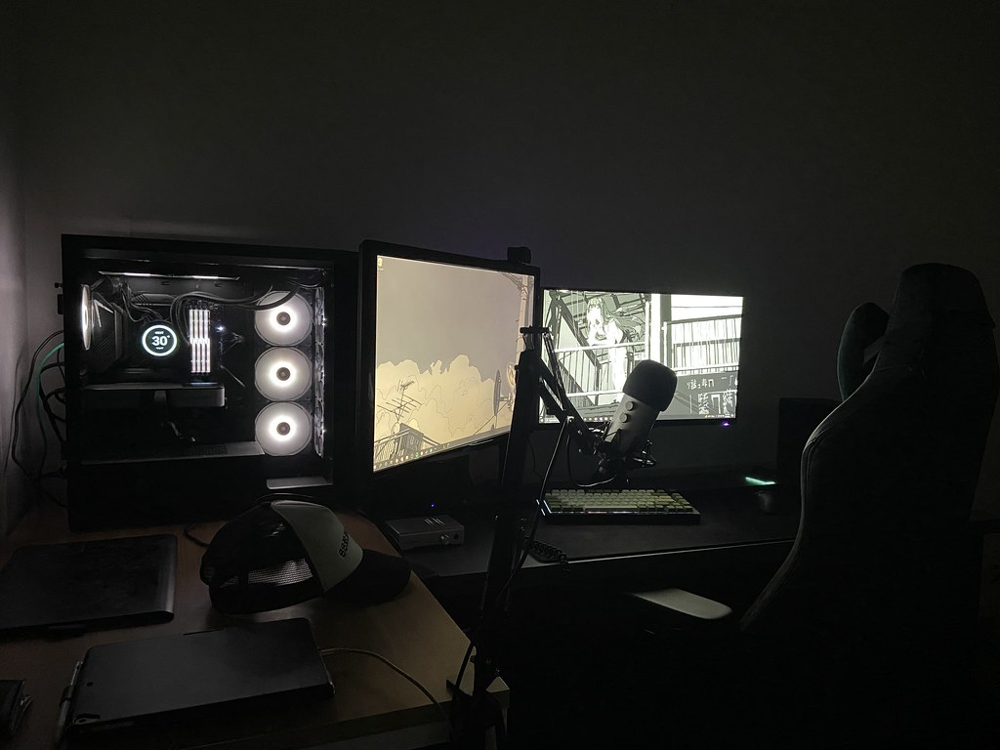
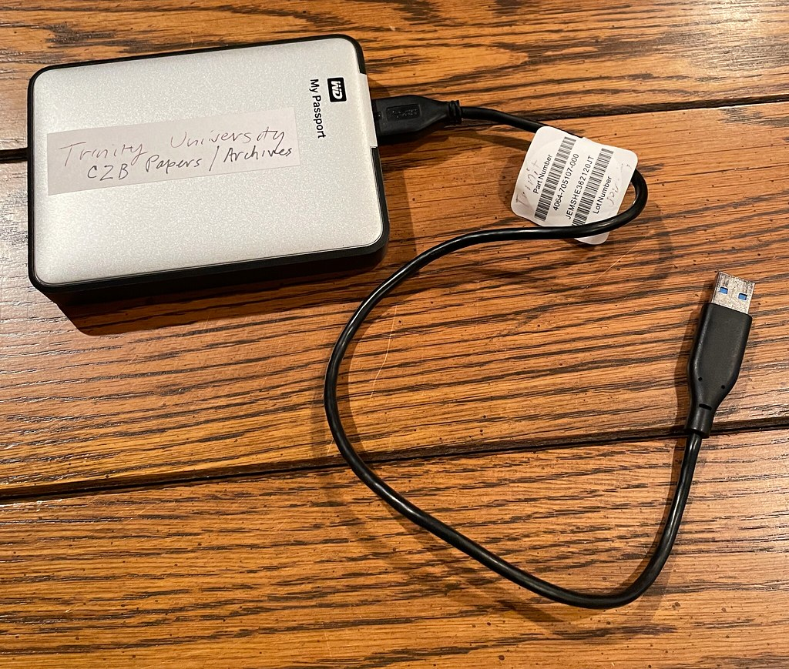
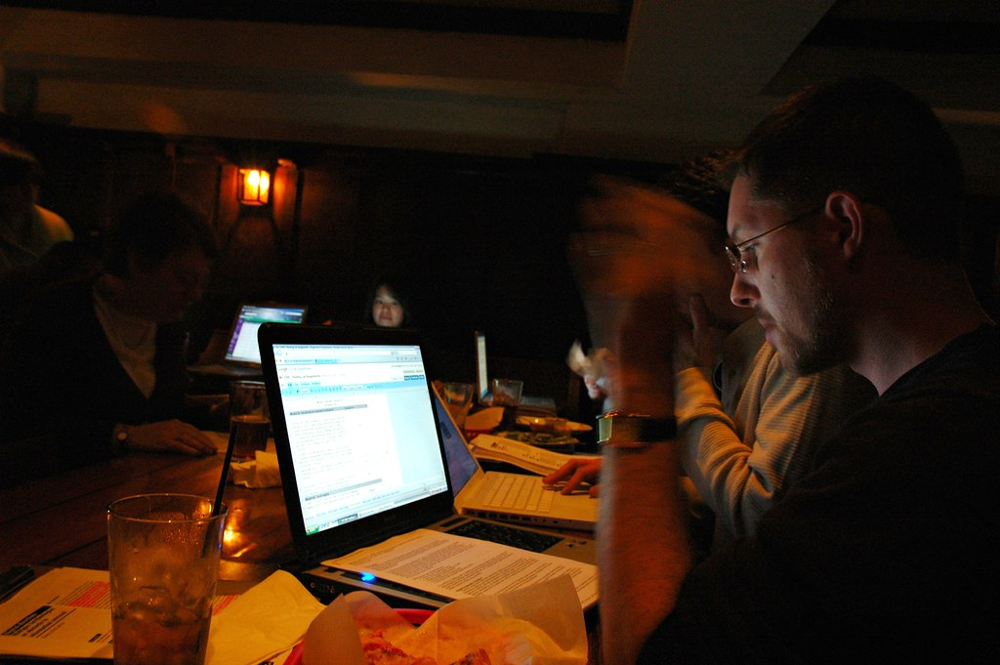

MEDIA

実績0本でも応募できる案件の見分け方と、ポートフォリオの代わりになる4つの方法をクライアント視点から解説します。

CPU・メモリ・ストレージ・GPUの必要スペックを項目別に解説。用途別のおすすめ目安と、予算を抑えて始めるための工夫も紹介します。

コーデックとビットレートの基礎から、用途別の書き出し設定の目安、画質を保ちながら容量を抑えるコツまで解説します。
朝型・家事育児との両立・独立直後の3タイプのスケジュール例と、時間の使い方を組み立てる5つのポイントを紹介します。
アパレル販売員から動画編集の学習を始めた卒業生に、3ヶ月間の学習の進め方や初案件獲得までのリアルな道のりを聞きました。
クラウドワークス・ランサーズ・ココナラなど主要サイトの特徴を比較。サイトごとの向き不向きや、SNSなど他の探し方も解説します。

独学とスクール、それぞれのメリット・デメリットを比較。向いている人の特徴や、独学でつまずきやすいポイントも解説します。

料金体系・操作性・機能の違いを初心者目線で比較。案件対応を目指す人にも、まず無料で試したい人にも選び方を解説します。
案件別の単価相場を表で整理。「稼げない」と言われる理由と、単価を上げる5つの方法をわかりやすく解説します。